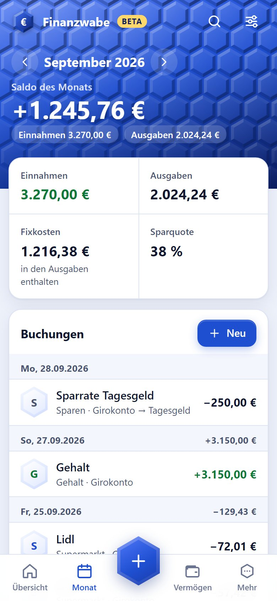

1
Wofür gebe ich mein Geld aus?
Einnahmen und Ausgaben pro Monat, sauber nach Kategorien. Fixkosten zählen genau einmal – keine doppelten Summen wie in selbst gebauten Tabellen. Budgets warnen dich ab 80 %.
- Monats- und Jahresübersicht mit Vorjahresvergleich
- Budgets je Kategorie mit Warnung
- Daueraufträge tragen sich selbst ein